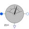

VoltageQuasiRMSSensorContinuous quasi voltage RMS sensor for multi phase system |

|
Diagram
{kind=link}
Information
This information is part of the Modelica Standard Library maintained by the Modelica Association.
This sensor determines the continuous quasi RMS value of a multi phase voltage system, representing an equivalent RMS voltage V vector or phasor. If the voltage waveform deviates from a sine curve, the output of the sensor will not be exactly the average RMS value.
V = sqrt(sum(v[k]^2 for k in 1:m)/m)
Connectors (3)
| plug_p |
Type: PositivePlug Description: Positive polyphase electrical plug with m pins |
|
|---|---|---|
| plug_n |
Type: NegativePlug Description: Negative polyphase electrical plug with m pins |
|
| V |
Type: RealOutput Description: Continuous quasi RMS of voltage |
Components (2)
| voltageSensor |
Type: VoltageSensor |
|
|---|---|---|
| quasiRMS |
Type: QuasiRMS |
Used in Examples (3)
|
Modelica.Electrical.MultiPhase.Examples |
|
|
Modelica.Magnetic.QuasiStatic.FundamentalWave.Examples.BasicMachines.SynchronousMachines Test example: PermanentMagnetSynchronousMachine fed by current source |
|
|
Modelica.Magnetic.QuasiStatic.FundamentalWave.Examples.BasicMachines.SynchronousMachines Test example: Synchronous reluctance machine fed by current source |